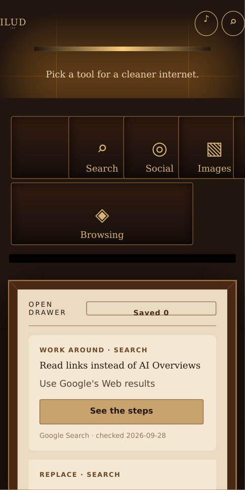
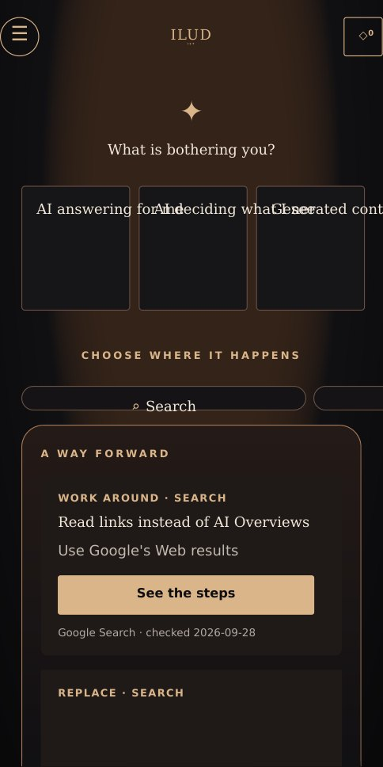
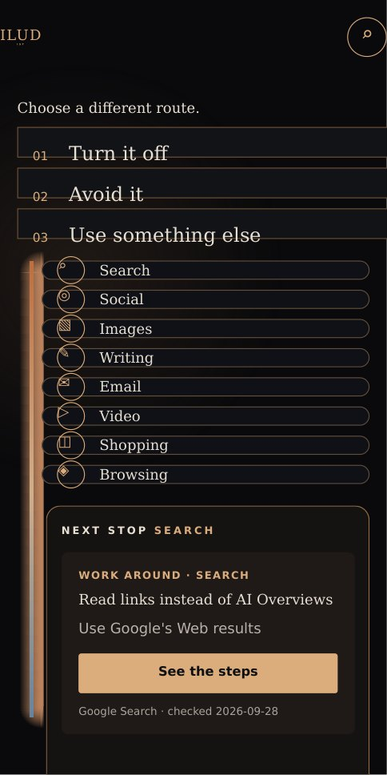
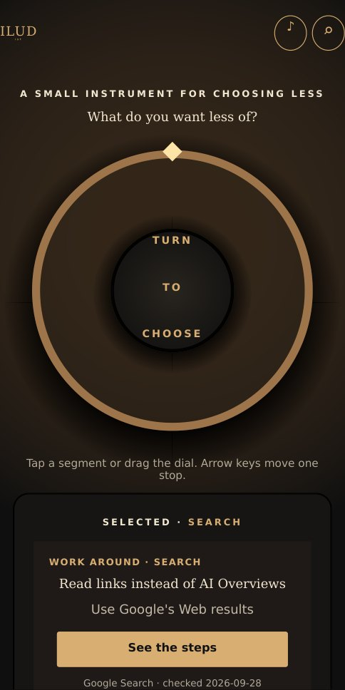
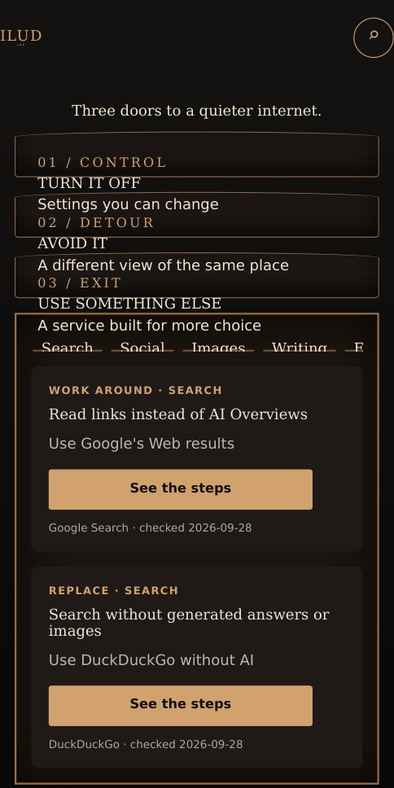
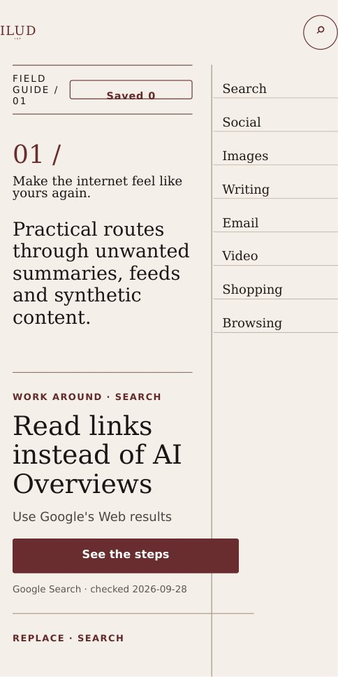
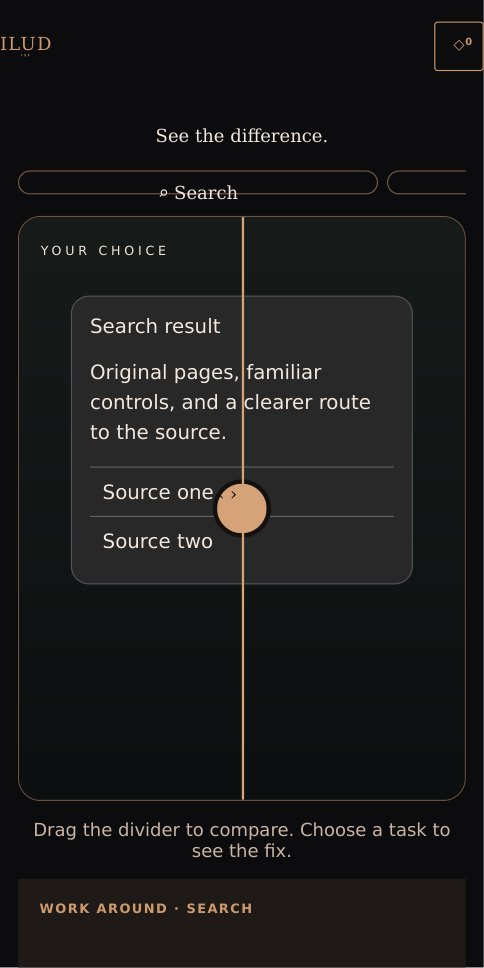
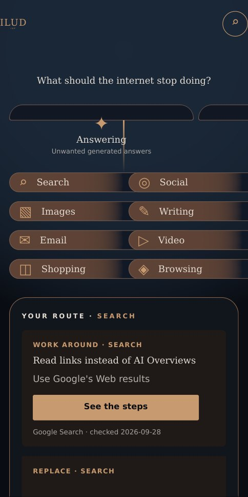
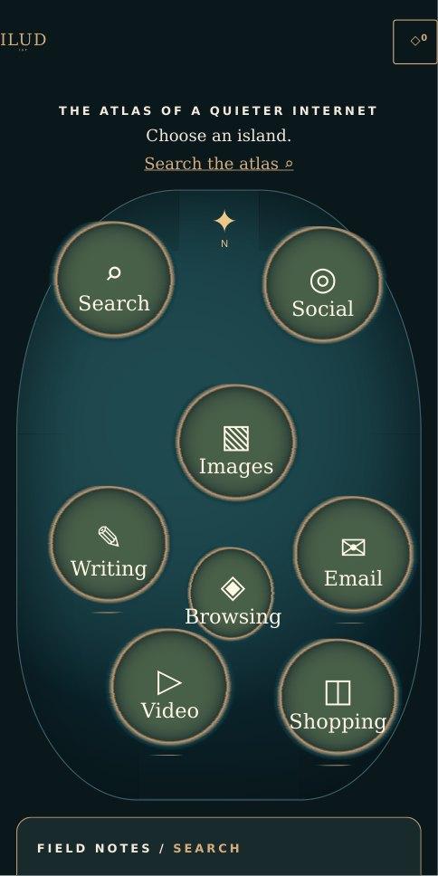
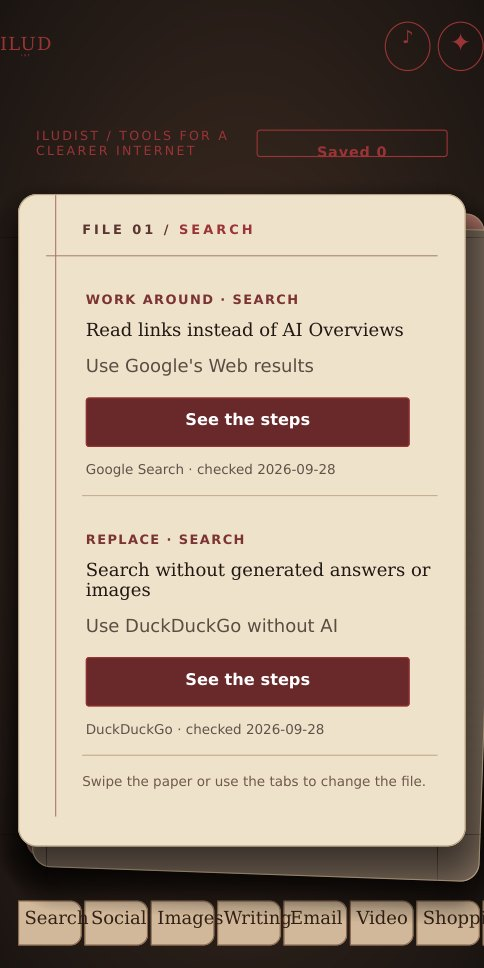

A quieter internet, ten ways in.
Each independent application takes the same researched routes to a cleaner online experience and makes them feel different in your hands.
Begin with The Cabinet
THE CABINET
Choose the interface that makes sense to you. Every one stands alone.
The Cabinet
Reach for a tool. Pull out a practical fix.
OPEN THE CABINET ↗
02The Sanctuary
Begin with what is bothering you.
ENTER THE SANCTUARY ↗
03The Switchyard
Follow a route toward a better default.
FOLLOW A ROUTE ↗
04The Dial
Turn the instrument to choose what to quiet.
TURN THE DIAL ↗
05The Portals
Turn it off, avoid it, or leave for a different service.
OPEN A DOOR ↗
06The Index
Read the choices as an editorial field guide.
READ THE INDEX ↗
07The Difference
Slide between more noise and more choice.
COMPARE THE VIEWS ↗
08The Constellation
Trace a problem to a useful next step.
TRACE A PATH ↗
09The Atlas
Explore a map of calmer online habits.
EXPLORE THE ATLAS ↗
10The Folio
Keep useful fixes in a movable paper file.
OPEN THE FOLIO ↗Practical routes, clear limits.
Twenty researched guides cover search, social, images, writing, email, video, shopping, and browsing. Each application distinguishes a real off switch from a temporary view or a way to reduce unwanted content. Every guide includes steps, caveats, platform scope, a source link, and its check date.